Japan / Hokkaido / Minamifurano
Minamifurano
Minamifurano · Hokkaido
Minamifurano
Highlighted on the Hokkaido map.
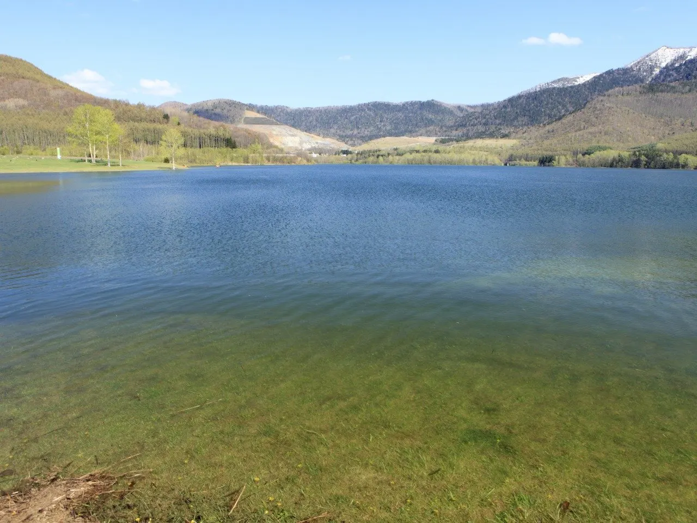
Stay
フェアフィールド・バイ・マリオット・北海道南富良野
Feafiirudo Bai Mariotto Hokkaidouminami Furano
暮らす宿ソラプチ
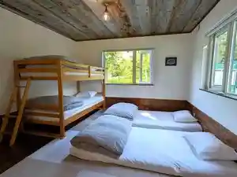
Kura Su Yado Sorapuchi
Dining
フォーチュンベーグルズ
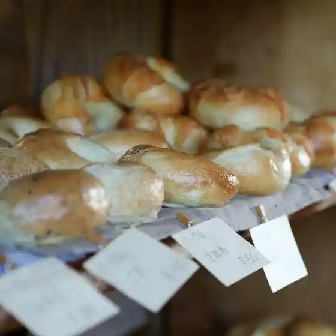
Foochunbeeguruzu
農産物直売所 作倶楽
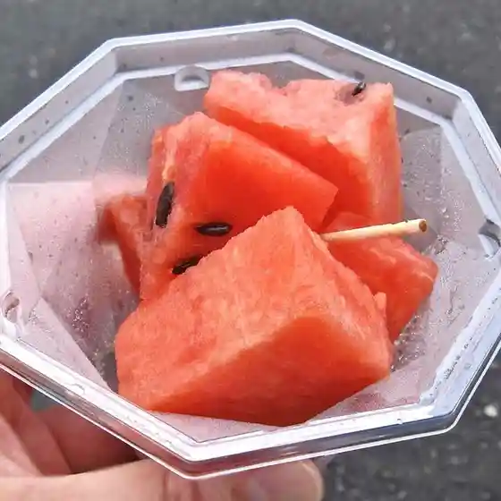
Nousanbutsu Chokubai Tokoro Saku Gu Raku
旨いもん屋 旬香
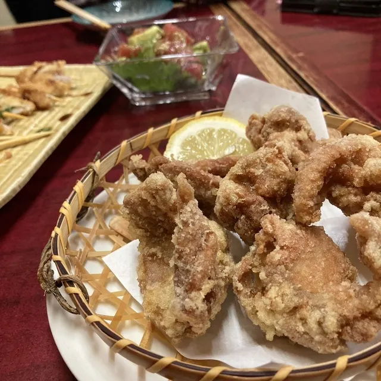
Umai Mon Ya Shunkou
たるきぃとな
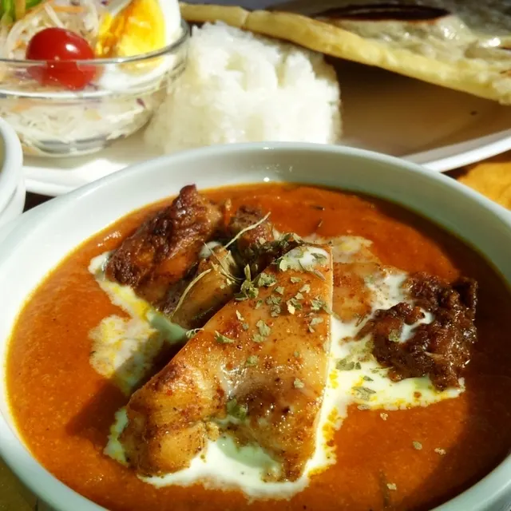
Tarukiitona
いとう屋
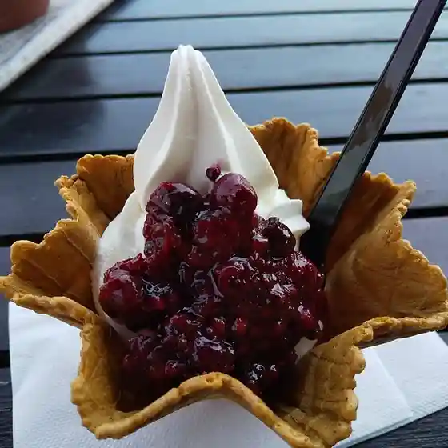
Itou Ya
Atelier Cafe Restaurant 人来瑠
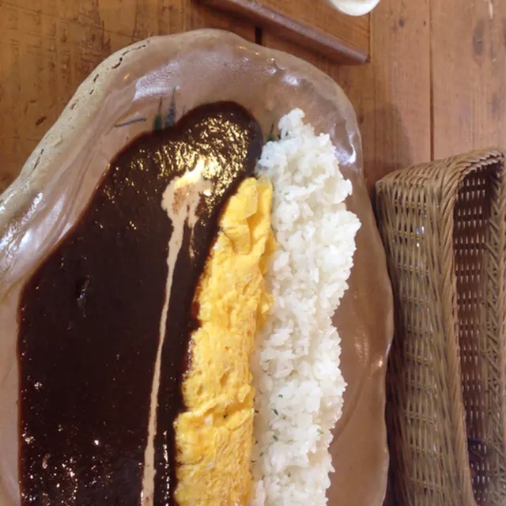
Atelier Cafe Restaurant Nin Rai Ru
cafe 合う時
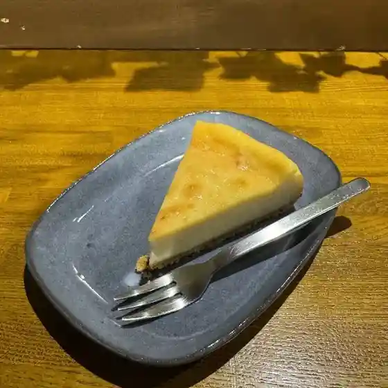
Cafe Au Toki
傍蕎屋
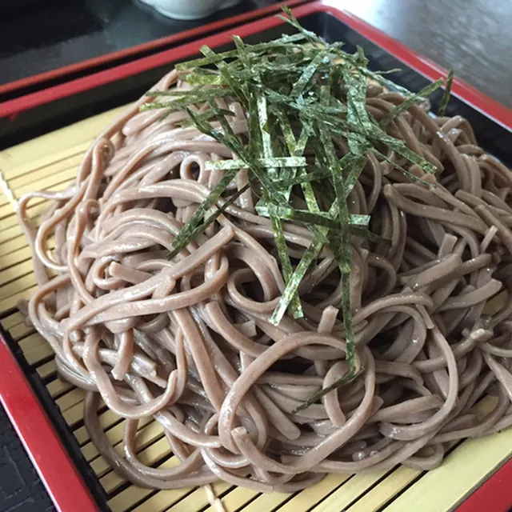
Bou Kyou Ya
おもちカフェ もちはもち屋
Omochi Kafe Mochihamochi Ya
おち庵
Ochi Iori
セイコーマート 南富良野店
Seikoomaato Minamifurano Mise
CAFE seizan
Cafe Seizan
南富旅館
Minami Tomi Ryokan
りとる
Ritoru
岩本
Iwamoto
ビストロ さっちゃん
Bisutoro Satchan
KUMADEL Cafe
Kumadel Cafe
こはんのごはん
Kohannogohan
レストラン メープル
Resutoran Meepuru
南富フーズ
Minami Tomi Fuuzu
福楽
Fuku Raku
リゾート・イン
Rizooto In
道の駅 南ふらの
Michi No Eki Minami Furano
スヴァールバルカフェ
Suvaarubarukafe
Sights
Kanayama Lake Forest Park
Kanayama Lake Forest Park
Sorachi River Genryu Tentosauna Experience
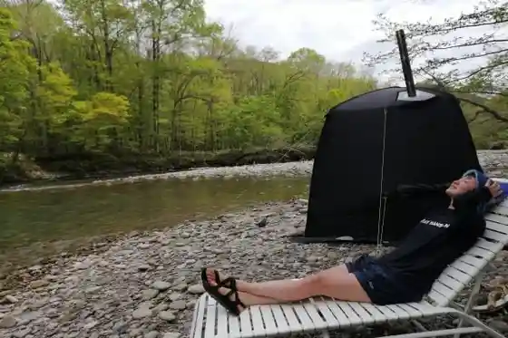
Sorachi River Genryu Tentosauna Experience